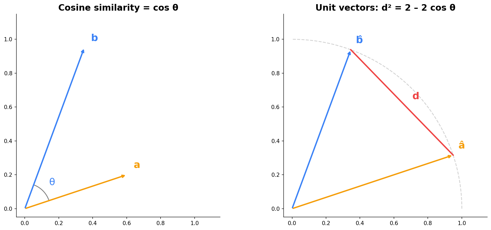
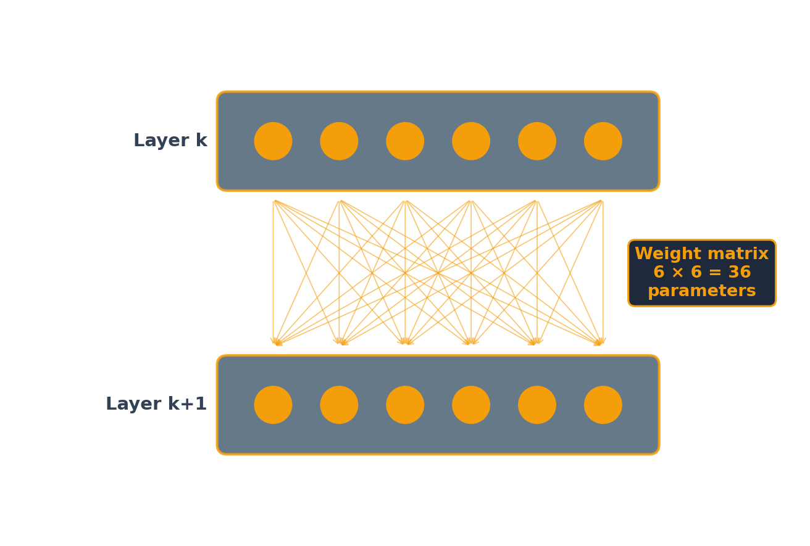
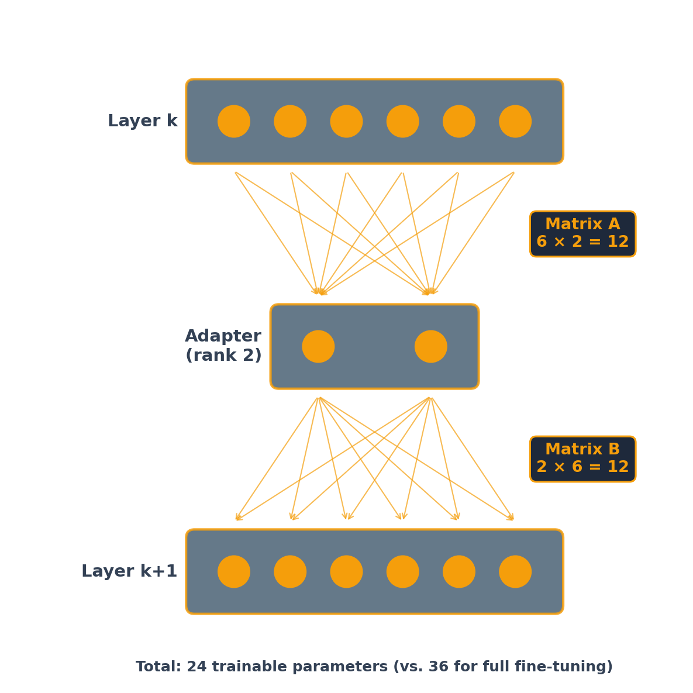

A pretrained LLM already knows language. Fine-tuning adjusts its weights on a smaller, task-specific dataset so it consistently performs a specific task the way you want:
Adopt a specific tone or format (e.g., always respond as a financial analyst)
Learn domain terminology and conventions
Follow company-specific rules and workflows
Analogy: a pretrained model is like hiring a smart generalist. Fine-tuning is specialized on-the-job training.
Fine-Tuning vs. Prompting vs. RAG
Prompting / Skills
Change behavior via instructions
No training required
Limited by context window
Easy to iterate
RAG
Inject external knowledge at query time
No model weights changed
Answers grounded in retrieved documents
Great for factual Q&A
Fine-Tuning
Change the model’s weights
Learns patterns, tone, and format
Knowledge baked into the model
Best for consistent, specialized behavior
When to Fine-Tune
Fine-tuning is not the right tool when:
Your data changes frequently (use RAG instead)
You need answers from specific documents (use RAG)
A well-crafted prompt already works (keep it simple)
Fine-tuning is worth the effort when:
You need consistent behavior across thousands of queries (not one-off tasks)
You want lower latency and cost than a large model with a long system prompt
You have (or can generate) high-quality training examples
Distillation: A Powerful Pattern
One compelling use case for fine-tuning: use a large model to generate training data, then fine-tune a smaller model on it.
Cost
Large models cost 10–30x more per query
Generate training data once, then run the small model at a fraction of the cost
Speed
A fine-tuned small model responds in milliseconds for classification, seconds for generation
Large API models are 10–50x slower
Privacy
A fine-tuned small model runs entirely on your infrastructure
No data leaves your network (HIPAA, GDPR)
Distillation in Practice
Well-known examples of LLM → small model distillation:
Stanford Alpaca: GPT-3.5 → LLaMA 7B. API cost < $600. Competitive on simple instruction-following, weaker on reasoning.
Microsoft Orca: GPT-4’s detailed reasoning traces (not just answers) → smaller model. Capturing the teacher’s thinking process improves quality.
Microsoft Phi: LLM-generated “textbook quality” synthetic data → 1.3B–3B parameter models that match much larger models on reasoning benchmarks.
The pattern works best for specific, repeatable tasks at scale: classify emails, extract fields, generate reports. For diverse, one-off tasks, just use the LLM directly.
The Fine-Tuning Process
Collect Training Data
Training data is a set of input/output pairs — examples of what you want the model to do.
Input
Output
“Summarize this 10-K risk factor…”
“The company faces supply chain risk due to…”
“Classify this earnings call sentence…”
“Positive guidance”
“Write a credit memo for…”
“Credit Assessment: BBB+ …”
Start small — behavioral changes can appear with as few as 20 examples. Meta’s LIMA project showed strong results with just 1,000 carefully curated examples. Quality matters more than quantity.
What Can Go Wrong?
Fine-tuning is not risk-free. Issues to watch for:
Catastrophic forgetting: the model loses general capabilities it had before fine-tuning (e.g., it classifies sentiment perfectly but can no longer summarize)
Overfitting: with too few examples, the model memorizes training data instead of learning patterns — performs great on training-like inputs, fails on anything different
Maintenance burden: when the base model gets a new version, you may need to re-fine-tune
Claude
Claude Desktop
Claude Desktop has three modes: Chat, Cowork, and Code. In all three, prompts go to and responses come from the cloud. The modes differ in where Python execution happens.
Chat: Python runs on Anthropic’s servers. Only libraries pre-installed by Anthropic. No internet access from Python (sandboxed).
Cowork: Python runs on your computer. Any libraries you want. No internet access from Python (sandboxed).
Code: Python runs on your computer. Any libraries you want. Internet available.
Code mode is the most powerful but also the most permissive — Claude can read/write files, run shell commands, and access the internet. Use it when you need full control; use Chat or Cowork for safer exploration.
Click the Extensions icon in the left sidebar (four squares), search for “claude code”, and install the one published by Anthropic (look for the verified checkmark). The extension ID is anthropic.claude-code.
Slash Commands
Type / in Claude Code to see all available commands. The most useful:
/resume — resume a previous conversation by name or ID, picking up where you left off
/rewind — undo Claude’s code changes and revert the conversation to an earlier point
/diff — open an interactive diff viewer to review all uncommitted changes
/plan — enter read-only planning mode so Claude designs a strategy before making changes
/model — switch models on the fly (e.g., from Sonnet to Opus for harder tasks)
/cost — check real-time token usage and spending
If you install (or ask Claude to install) the critique skill, you can prompt /critique filename to get a multi-perspective review of your work.
Cosine Similarity
Cosine Similarity vs. Distance
The cosine similarity between two vectors is the cosine of the angle between them. It measures direction, not magnitude.

If we normalize vectors to unit length (project them onto the unit circle), the squared Euclidean distance between them is:
\[d^2 = 2 - 2\cos\theta\]
So high cosine similarity\(\Leftrightarrow\) small angle \(\Leftrightarrow\) normalized vectors are close together.
Biases and Weights
A Simple Neural Network
%%{init: {'theme': 'base', 'themeVariables': {'fontSize': '36px', 'primaryColor': '#f59e0b', 'primaryTextColor': '#0f172a', 'lineColor': '#f59e0b', 'clusterBkg': 'transparent', 'clusterBorder': '#f59e0b', 'clusterTextColor': '#fff'}, 'flowchart': {'nodeSpacing': 80, 'rankSpacing': 140, 'padding': 20, 'useMaxWidth': true}}}%%
graph LR
subgraph Inputs[" "]
direction TB
X1(("x₁"))
X2(("x₂"))
X3(("x₃"))
end
subgraph Hidden["Hidden Layer"]
direction TB
H1(("y₁"))
H2(("y₂"))
end
subgraph Output[" "]
direction TB
Y(("z"))
end
X1 --> H1 & H2
X2 --> H1 & H2
X3 --> H1 & H2
H1 --> Y
H2 --> Y
style X1 fill:#3b82f6,stroke:#3b82f6,color:#fff
style X2 fill:#3b82f6,stroke:#3b82f6,color:#fff
style X3 fill:#3b82f6,stroke:#3b82f6,color:#fff
style H1 fill:#f59e0b,stroke:#f59e0b,color:#fff
style H2 fill:#f59e0b,stroke:#f59e0b,color:#fff
style Y fill:#0f172a,stroke:#0f172a,color:#fff
linkStyle default stroke:#334155,stroke-width:2px
A fully connected network: every input connects to every neuron in the next layer.
How a Neuron Decides
Each neuron in the hidden layer computes a weighted sum of its inputs plus a bias:
\[\hat{y} = b + w_1 x_1 + w_2 x_2 + w_3 x_3\]
The neuron “fires” (produces a nonzero output) only if this sum is positive:
The weights\(w_1, w_2, w_3\) determine which inputs matter and how much
The bias\(b\) sets the threshold — how large the weighted inputs must be before the neuron activates
If the weights are positive, the neuron fires when the inputs are large enough. The bias \(b\) controls how large — a more negative bias means the inputs must be stronger to activate the neuron. Training a neural network means finding the right weights and biases.
LoRA: Low-Rank Adaptation
Full Fine-Tuning vs. LoRA
Full Fine-Tuning
Update all model parameters
Maximum flexibility
Requires significant GPU memory and compute
Produces a full copy of the model
LoRA (Parameter-Efficient)
Freeze the original weights
Train only small adapter matrices
~100x fewer trainable parameters
Comparable quality on most tasks, fraction of the cost
In practice, almost everyone uses LoRA or a similar parameter-efficient method. Full fine-tuning is reserved for large-budget projects.
How LoRA Works
The LoRA paper (Hu et al., 2021) observed that the changes needed to adapt a model to a new task are surprisingly simple — they can be captured with a small number of parameters.
Instead of updating an entire weight matrix, LoRA decomposes the update into two small matrices. Only these small matrices are trained; the original weights are frozen.
Full Fine-Tuning
Update millions of parameters per layer
Example: a 4096 × 4096 layer has 16.8 million parameters
Full copy of model weights
LoRA (rank 16)
Update only ~131,000 parameters per layer
128x reduction
Adapter files are just MBs, not GBs
At deployment, merge adapters into the base weights — no latency penalty
Original Model

Each of the 6 nodes in layer k+1 receives input from all 6 nodes in layer k, so the weight matrix has 6 × 6 = 36 coefficients. Each node also has a bias, adding 6 more parameters — 42 total per layer. Full fine-tuning means retraining all 42.
LoRA (Rank 2): Low-Rank Update Path

The original 36 direct connections remain active but frozen (not shown). At real scale (4096 × 4096 layers, rank 16): 131K vs. 16.8M trainable parameters — a 128× reduction.
LoRA: The Math
LoRA trains two small matrices per layer. The adapter path is purely linear — no activation function in between:
Matrix A has dimensions rank × input size (compresses down)
Matrix B has dimensions output size × rank (expands back up)
The product \(B \times A\) has the same dimensions as the original weight matrix \(W\)
At inference, merge the adapter into the original weights:
\[W' = W + B \times A\]
Because the adapter path is linear (just two matrix multiplications, no activation function), the product \(B \times A\) is itself a matrix that can be added directly to \(W\). The merged model has the same architecture and speed as the original — the adapter disappears into the weights.
QLoRA: Fine-Tune on a Free GPU
QLoRA (Dettmers et al., 2023) adds 4-bit quantization on top of LoRA:
Compress base model weights to 4-bit precision (from 16-bit) — 4x memory savings
Train LoRA adapters on top of the quantized model
Quality is comparable to full-precision LoRA
Result: fine-tune a 70B-parameter model on a single 48GB GPU. For smaller models like Gemma 1B, QLoRA makes fine-tuning possible on a free Colab T4 (16GB).
Hands-On: Fine-Tuning with LoRA
Fine-tune Google Gemma 3 1B to classify financial news sentiment using QLoRA — in a Colab notebook.